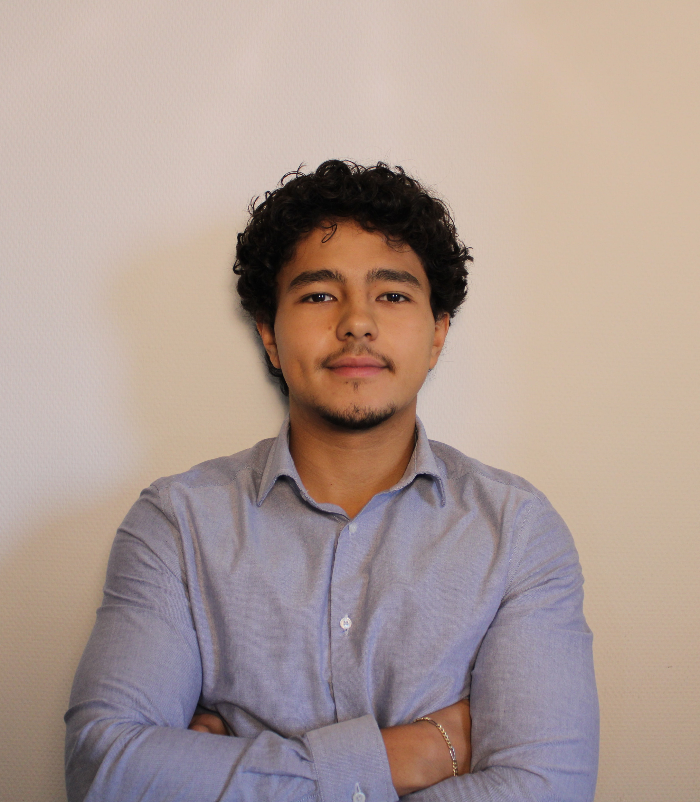

Financial Analyst & Data Scientist
Business Analytics Bachelor's student at the University of Amsterdam, specializing in finance and financial markets' data. I build algorithms to identify edges in financial markets and machine learning models that translate complex economic signals into actionable insights.

Quantitative research and machine learning projects focused on financial markets and macroeconomic forecasting.
Can quantitative models beat the Central Bank's analysts on inflation forecasting? Regularised ML models trained on 100+ macroeconomic indicators, benchmarked against the official market consensus.
Live, browser-based interactive risk-analysis tool, using the CAPM framework. Select any S&P 500 stocks, compute beta and expected returns, and visualise the Security Market Line — powered by real Yahoo Finance and EODHD data.